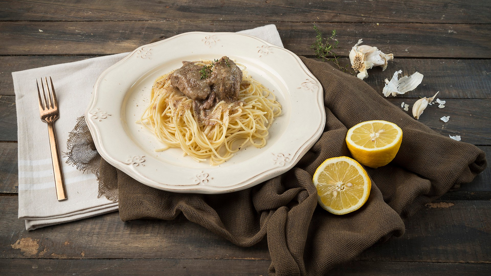

Νίκος Ταλασλόγλου
Μαθητής στο πανεπιστήμιο Δυτικής Αττικής στο τμήμα Αρχειονομίας, Βιβλιοθηκονομίας & Συστημάτων Πληροφόρησης
Μαθητής στο πανεπιστήμιο Δυτικής Αττικής στο τμήμα Αρχειονομίας, Βιβλιοθηκονομίας & Συστημάτων Πληροφόρησης
Ονομάζομαι Νίκος Ταλασλόγλου
και είμαι 18 χρονών. Σπουδαζω
στο ΠΑΔΑ στο τμήμα Αρχειονομίας,
Βιβλιοθηκονομίας & Συστημάτων
Πληροφόρησης.
Εχω εξαιρετικές ικανότητες σε
προγραμματιστικές γλώσσες όπως
HTML, CSS, C++ και
Python καθώς και
σε άλλα υπολογιστικά προγράμματα της
Microsoft αλλά επίσης γνώσεις σε
Adobe Photoshop, Premiere και
After Effects.
Γνωρίζω 2 άλλες γλωσσες πέρα απο τα Ελληνικά.
Αγγλικά οπου τα μιλαω σαν να είναι η πρωτη μου
γλώσσα αλλά κατέχω και το πτυχίο Proficiency.
Επίσης έχω λίγες γνώσεις στα Ισπανικά. Ακόμα δεν
έχω δουλέψει κάπου οπότε δεν έχω επαγγελματική
εμπειρία προς το παρόν!
Το αγαπημένο μου μάθημα στο
πανεπιστήμιο είναι το εργαστήριο
Δίκτυα Υπολογιστών καθώς
μαθαίνω τα πράγματα που με
ενδιαφέρουν και είμαι καλός
σε αυτά.
Οι αγαπημένες μου δραστηριότητες
είναι να πηγαίνω στο γυμναστήριο,
να παίζω μπάσκετ να παίζω βιντεοπαιχνίδια
και να βγαίνω βόλτες.Επίσης απολαμβάνω
να διαβάζω βιβλία κατηγορίας Self
Improvement.Το αγαπημένο μου βιβλίο
είναι "The Art of War" και o αγαπημένος
μου καλλιτέχνης ο Robert Greene.
Ως μεγάλος φαν της μουσικής μου
αρέσουν τα περισσότερα ειδη
ανάλογατην διάθεση αλλά αυτα
που ακούω σε κύρια βάση ειναι
rap και hip-hop. Οι αγαπημένοι
μου καλλιτέχνες είναι ο Playboi
Carti, Lil Uzi Vert, και πολλοί αλλοι.
Το αγαπημένα μου είδη ταινιών
ειναι το horror,δράσης και
κομμωδία αλλά και συνδιασμός αυτών.
Είναι δυσκολο να επιλέξω αγαπημενη
ταινία αλλά υποθέτω The Wolf Of Wall
Street. Ένας απο τουςαγαπημένους μου
ηθοποιούς είναι ο Dwayne Johnson.
Υπάρχουν πολλά φαγητά που μου
αρέσουν όπως:
Αλλά το αγαπημένο μου είναι το μοσχάρι
λεμονάτο με μακαρόνια!

Τα αγαπημένα μου μέρη είναι πολλά. Σαντορίνη,
Πάρος, Μάνη. Θέλω πολύ επίσης να επισκεφθώ το
Los Angeles στην Αμερική.

Το αγαπημένο μου ASCII art είναι ο Ταζ.
, .-'"'=;_ ,
|\.'-~`-.`-`;/|
\.` '.'~-.` './
(\`,__=-'__,'/)
_.-'-.( d\_/b ).-'-._
/'.-' ' .---. ' '-.`\
/' .' (= (_) =) '. `\
/' .', `-.__.-.__.-' ,'. `\
( .'. V V ; '. )
( |:: `-,__.-.__,-' ::| )
| /|`:. .:'|\ |
| / | `:. :' |`\ |
| | ( :. .: ) | |
| | ( `:. :' ) | |
| | \ :. .: / | |
| | \`:. .:'/ | |
) ( `\`:. .:'/' ) (
( `)_ ) `:._.:' ( _(` )
\ ' _) .' `. (_ ` /
\ '_) / .'"```"'. \ (_` /
`'"` \ ( ) / `"'`
___ `.`. .'.' ___
.` ``"""'''--`_) (_'--'''"""`` `.
(_(_(___...--'"'` `'"'--...___)_)_)